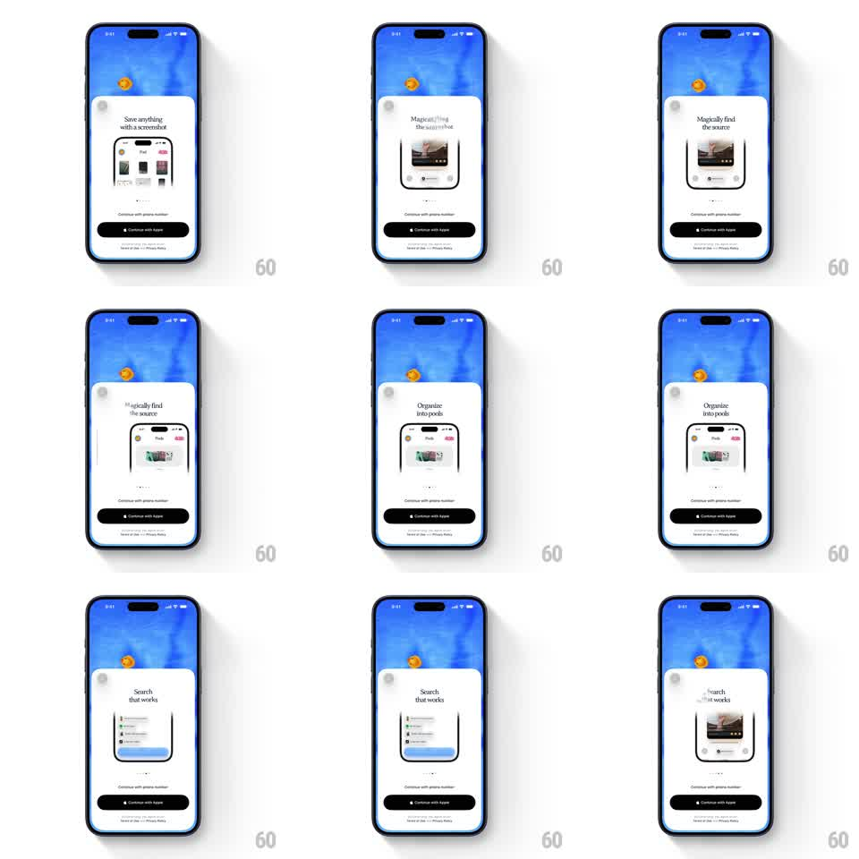

Media
Frame-by-frame

Rebuild this interaction 1:1: Pool's onboarding carousel - swiping horizontally cycles feature cards ("Save anything with a screenshot", "Magically find the source", "Organize into pools", "Search that works") inside a white sheet over the blue pool-water backdrop, with an animated pagination indicator.

Rebuild this interaction 1:1: Pool's onboarding carousel - swiping horizontally cycles feature cards ("Save anything with a screenshot", "Magically find the source", "Organize into pools", "Search that works") inside a white sheet over the blue pool-water backdrop, with an animated pagination indicator.
## Integration
Integration: stack-agnostic spec - springs given as stiffness/damping, timed motions as duration + curve; map every value to your framework and animation library of choice.
## Scene
Onboarding screen: animated blue pool-water background with a floating coin. A white rounded sheet holds the carousel: title, mini screenshot graphic, pagination dots, and pinned sign-in buttons ("Continue with phone number", "Continue with Apple") plus a terms line.
## Motion spec
Pattern: swipeable onboarding carousel with animated pagination.
- Cards track the finger 1:1; on release the carousel snaps to the nearest page (spring ~320/28, 300ms).
- During a swipe, the outgoing title/graphic exit in the swipe direction with a slight parallax lead over the incoming one (incoming lags ~10% behind).
- Pagination dots animate: the active dot stretches into a pill (width 8 -> 20px, 250ms) and slides to the new index.
- The water background and coin drift continuously (slow wave loop, ~8s), unaffected by swipes.
- Buttons and terms stay pinned; only the card area pages.
## Calibration
- Keep the snap snappy - onboarding swipes should feel cheap to flick through.
- Parallax offset between outgoing and incoming cards is what makes it feel layered.
## Reduced motion
Cards crossfade (200ms); pagination pill jumps without stretch; water holds a static frame.
## Don't miss
- The water is alive behind the sheet at all times.
- The pagination pill stretch happens during the swipe, not after.